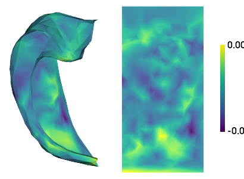
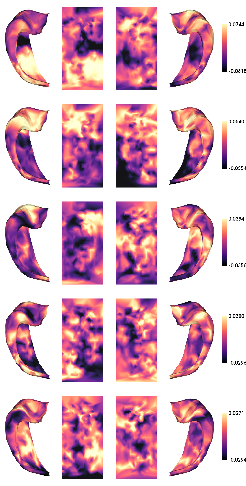
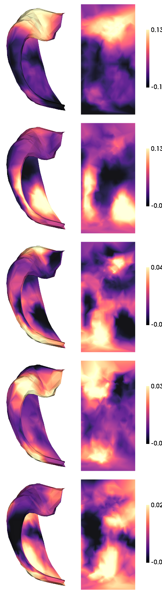

[18]:
import numpy as np
import matplotlib.pyplot as plt
import nibabel as nib
import sys
sys.path.insert(1, '/host/cassio/export03/data/opt/hippunfold_toolbox/hippunfold_toolbox')
import utils
import plotting
import os
import glob
from brainspace.gradient import GradientMaps
from brainspace.datasets import load_conte69
from brainspace.plotting import plot_hemispheres
from brainspace.mesh.mesh_io import read_surface
from brainspace.datasets import load_group_fc, load_parcellation, load_conte69
surf_lh, surf_rh = load_conte69()
[39]:
# 1. specify the subjects and directories
micapipe_dir = '../sourcedata/Micapipe_PNI'
hippunfold_dir = '../hippunfold/PNI_v1.3.0_super/hippunfold'
tmp_dir = 'tmp_rsfMRI'
subs = ['PNC002', 'PNC003', 'PNC006', 'PNC007', 'PNC009', 'PNC010', 'PNC015','PNC016', 'PNC018','PNC019']
ses = '01'
micapipe='/data_/mica1/01_programs/micapipe-v0.2.0'
# 2. Prepare data and analysis parameters
hemis = ['L','R']
labels = ['hipp']# ,'dentate']
sigma = 1 #Gaussian smoothing kernal sigma (mm)
ind = [range(419)]#, range(419,483)]
shp = [419]#,64]
clipaftertime = 210 # clip after this many TRs
# 3. Load neocortical surfaces for visualzation
parcL = nib.load('/data/mica1/01_programs/micapipe/parcellations/schaefer-400_conte69_lh.label.gii').darrays[0].data
parcR = nib.load('/data/mica1/01_programs/micapipe/parcellations/schaefer-400_conte69_rh.label.gii').darrays[0].data
parc = np.concatenate((parcL,parcR))
c69_inf_lh= read_surface(micapipe + '/surfaces/fsLR-32k.L.inflated.surf.gii', itype='gii')
c69_inf_rh = read_surface(micapipe + '/surfaces/fsLR-32k.R.inflated.surf.gii', itype='gii')
labeling = load_parcellation('schaefer', scale=400, join=True)
atlas = 'schaefer-400'
# Read label for conte69
labels_c69 = np.loadtxt(open(micapipe + '/parcellations/' + atlas + '_conte69.csv'), dtype=int)
# Mask of the medial wall
mask_c69 = labels_c69 != 0
0. Map data to hippocmapal surface
[58]:
!mkdir -p {tmp_dir}
shp = [419,64]
for sub in subs:
if not glob.glob(f'{hippunfold_dir}/sub-{sub}/surf/sub-{sub}_hemi-{hemis[-1]}_space-T1w_den-2mm_label-{labels[-1]}_rsfMRI_smooth-{sigma}mm.func.gii'):
# convert affines
cmd1a = f'c3d_affine_tool '\
f'-itk {micapipe_dir}/sub-{sub}/ses-{ses}/xfm/sub-{sub}_ses-{ses}_from-me_task-rest_bold_to-nativepro_mode-image_desc-affine_0GenericAffine.mat '\
f'-o {tmp_dir}/sub-{sub}_ses-{ses}_tmp0GenericAffine0.txt'
!{cmd1a}
cmd1b = f'c3d_affine_tool '\
f'-itk {micapipe_dir}/sub-{sub}/ses-{ses}/xfm/sub-{sub}_ses-{ses}_from-nativepro_func_to-me_task-rest_bold_mode-image_desc-SyN_0GenericAffine.mat '\
f'-inv '\
f'-o {tmp_dir}/sub-{sub}_ses-{ses}_tmp0GenericAffine1.txt'
!{cmd1b}
for h,hemi in enumerate(hemis):
for l,label in enumerate(labels):
#apply affines
cmd2a = f'wb_command -surface-apply-affine '\
f'{hippunfold_dir}/sub-{sub}/surf/sub-{sub}_hemi-{hemi}_space-T1w_den-0p5mm_label-{label}_midthickness.surf.gii '\
f'{tmp_dir}/sub-{sub}_ses-{ses}_tmp0GenericAffine0.txt '\
f'{tmp_dir}/sub-{sub}_ses-{ses}_{h}_{l}_aff0.surf.gii'
!{cmd2a}
cmd2b = f'wb_command -surface-apply-affine '\
f'{tmp_dir}/sub-{sub}_ses-{ses}_{h}_{l}_aff0.surf.gii '\
f'{tmp_dir}/sub-{sub}_ses-{ses}_tmp0GenericAffine1.txt '\
f'{tmp_dir}/sub-{sub}_ses-{ses}_{h}_{l}_aff1.surf.gii'
!{cmd2b}
# apply warp (Note this is actually the INVERSE warp)
cmd3 = f'wb_command -surface-apply-warpfield '\
f'{tmp_dir}/sub-{sub}_ses-{ses}_{h}_{l}_aff1.surf.gii '\
f'{micapipe_dir}/sub-{sub}/ses-{ses}/xfm/sub-{sub}_ses-{ses}_from-nativepro_func_to-me_task-rest_bold_mode-image_desc-SyN_1Warp.nii.gz '\
f'{tmp_dir}/sub-{sub}_ses-{ses}_{h}_{l}_deform.surf.gii'
!{cmd3}
# sample
cmd4 = f'wb_command -volume-to-surface-mapping '\
f'{micapipe_dir}/sub-{sub}/ses-{ses}/func/desc-me_task-rest_bold/volumetric/sub-{sub}_ses-{ses}_space-func_desc-me_preproc.nii.gz '\
f'{tmp_dir}/sub-{sub}_ses-{ses}_{h}_{l}_deform.surf.gii '\
f'{tmp_dir}/sub-{sub}_ses-{ses}_{h}_{l}_rsfMRI.func.gii '\
f'-enclosing'
!{cmd4}
# smooth
cmd5 = f'wb_command -metric-smoothing '\
f'{hippunfold_dir}/sub-{sub}/surf/sub-{sub}_hemi-{hemi}_space-T1w_den-0p5mm_label-{label}_midthickness.surf.gii '\
f'{tmp_dir}/sub-{sub}_ses-{ses}_{h}_{l}_rsfMRI.func.gii '\
f'{sigma} '\
f'{tmp_dir}/sub-{sub}_ses-{ses}_{h}_{l}_rsfMRI_smooth.func.gii '
!{cmd5}
# downsample
func = nib.load(f'{tmp_dir}/sub-{sub}_ses-{ses}_{h}_{l}_rsfMRI_smooth.func.gii')
out_array = np.ones((len(func.darrays),shp[l]))
for k in range(len(func.darrays)):
data, f, v = utils.density_interp('0p5mm', '2mm',func.darrays[k].data, label,'nearest')
out_array[k,:] = data
data_array = nib.gifti.GiftiDataArray(data=out_array)
image = nib.gifti.GiftiImage()
image.add_gifti_data_array(data_array)
nib.save(image, f'{hippunfold_dir}/sub-{sub}/surf/sub-{sub}_hemi-{hemi}_space-T1w_den-2mm_label-{label}_rsfMRI_smooth-{sigma}mm.func.gii')
!rm -r {tmp_dir}
[24]:
cdata_hipp = np.ones((np.sum(shp),2,clipaftertime,len(subs)))*np.nan
for s,sub in enumerate(subs):
for h,hemi in enumerate(hemis):
for l,label in enumerate(labels):
cdata_hipp[ind[l],h,:,s] = nib.load(f'{hippunfold_dir}/sub-{sub}/surf/sub-{sub}_hemi-{hemi}_space-T1w_den-2mm_label-{label}_rsfMRI_smooth-{sigma}mm.func.gii').darrays[0].data.T[:,:clipaftertime]
1. Intrinsic Timescale of hippocampal timeseries data
[25]:
t = cdata_hipp[302,0,:,1]
m = np.mean(t)
var = np.var(t)
ndat = t - m
acf = np.correlate(ndat, ndat, 'full')[len(ndat)-1:]
acf = acf / var / len(ndat)
plt.plot(acf)
[25]:
[<matplotlib.lines.Line2D at 0x7f87520d3e80>]

[26]:
def IntrinsicTimescale(data, TR=1, threshold=0):
'''computes instrinsic timescale - the AUC of the autocorrelation up to the point
where the autocorrelation reaches threshold.
Input
img: input ND data, time being the last dimension
'''
shp = data.shape
i = data.reshape(-1, shp[-1])
out = np.zeros(i.shape[0])
for v in range(i.shape[0]):
m = np.mean(i[v,:])
var = np.var(i[v,:])
ndat = i[v,:] - m
acf = np.correlate(ndat, ndat, 'full')[len(ndat)-1:]
acf = acf / var / len(ndat)
f = np.where(acf<=threshold)[0]
if len(f)==0:
out[v] = np.nan
else:
out[v] = f[0]
out = np.reshape(out,shp[:-1])*TR
return out
[27]:
TR = nib.load(f'{micapipe_dir}/sub-{sub}/ses-{ses}/func/desc-me_task-rest_bold/volumetric/sub-{sub}_ses-{ses}_space-func_desc-me_preproc.nii.gz').header.get_zooms()[-1]
IntTS = np.ones((np.sum(shp),2,len(subs)))*np.nan
for s,sub in enumerate(subs):
IntTS[:,:,s] = IntrinsicTimescale(cdata_hipp[:,:,:,s],TR, threshold=0)
[28]:
plotting.surfplot_canonical_foldunfold(np.nanmean(IntTS,axis=(1,2)), den='2mm', hemis=['L'], labels=labels, unfoldAPrescale=True, tighten_cwindow=True, cmap='cividis', share='row', color_bar='right', embed_nb=True)
/export03/data/opt/venv/lib/python3.8/site-packages/brainspace/plotting/base.py:287: UserWarning: Interactive mode requires 'panel'. Setting 'interactive=False'
warnings.warn("Interactive mode requires 'panel'. "
[28]:

[29]:
plt.hist(IntTS.flatten());

[30]:
# save a copy of the 2D map
for l,label in enumerate(labels):
cdat = np.nanmean(IntTS,axis=(1,2))[ind[l]]
data_array = nib.gifti.GiftiDataArray(data=cdat)
image = nib.gifti.GiftiImage()
image.add_gifti_data_array(data_array)
nib.save(image, f'../maps/HippoMaps-initializationMaps/Dataset-PNI/MRI-7T-rsfMRI-IntTS_average-20_hemi-mix_den-2mm_label-{label}.shape.gii')
1. Calcualte ReHo
[31]:
def kendall_w(expt_ratings):
if expt_ratings.ndim!=2:
raise 'ratings matrix must be 2-dimensional'
m = expt_ratings.shape[0] #raters
n = expt_ratings.shape[1] # items rated
denom = m**2*(n**3-n)
rating_sums = np.sum(expt_ratings, axis=0)
S = n*np.var(rating_sums)
return 12*S/denom
def calc_reho(ts,F):
# note ts should be shape VxT
reho = np.ones((ts.shape[0]))*np.nan
for v in range(ts.shape[0]):
frows = np.unique(np.where(np.isin(F,v))[0])
verts = np.unique(F[frows,:])
reho[v] = kendall_w(ts[verts,:])
return reho
[34]:
reho = np.ones((np.sum(shp),2,len(subs)))*np.nan
for s,sub in enumerate(subs):
for h,hemi in enumerate(hemis):
for l,label in enumerate(labels):
Fname = f'/host/cassio/export03/data/opt/hippunfold_toolbox/resources/canonical_surfs/tpl-avg_space-unfold_den-2mm_label-{label}_midthickness.surf.gii'
F = nib.load(Fname).get_arrays_from_intent('NIFTI_INTENT_TRIANGLE')[0].data
reho[ind[l],h,s] = calc_reho(cdata_hipp[ind[l],h,:,s],F)
[35]:
plotting.surfplot_canonical_foldunfold(np.nanmean(reho,axis=(1,2)), den='2mm', hemis=['L'], labels=labels, unfoldAPrescale=True, tighten_cwindow=True, cmap='cividis', share='row', color_bar='right', embed_nb=True)
[35]:

[68]:
# save a copy of the 2D map
for l,label in enumerate(labels):
cdat = np.nanmean(reho,axis=(1,2))[ind[l]]
data_array = nib.gifti.GiftiDataArray(data=cdat)
image = nib.gifti.GiftiImage()
image.add_gifti_data_array(data_array)
nib.save(image, f'../maps/HippoMaps-initializationMaps/Dataset-PNI/MRI-7T-rsfMRI-ReHo_average-20_hemi-mix_den-2mm_label-{label}.shape.gii')
TODO: calculate tSNR before TS gets processed
[37]:
tSNR = np.mean(cdata_hipp,axis=2) / np.std(cdata_hipp,axis=2)
plotting.surfplot_canonical_foldunfold(np.nanmean(tSNR,axis=(1,2)), den='2mm', hemis=['L'], labels=labels, unfoldAPrescale=True, share='row', color_bar='right', zoom=1.7, embed_nb=True)
[37]:

3. rs functional connectivity (FC)
[46]:
cdata_hipp.shape
[46]:
(419, 2, 210, 10)
[47]:
#run gradients for all subjects
FC = np.ones((np.sum(shp),200,2,len(subs)))*np.nan
for s,sub in enumerate(subs):
neo_ts = nib.load(f'{micapipe_dir}/sub-{sub}/ses-{ses}/func/desc-me_task-rest_bold/surf/sub-{sub}_ses-{ses}_surf-fsLR-32k_desc-timeseries_clean.shape.gii').darrays[0].data[:clipaftertime,:]
neo_ts_parc = np.ones((neo_ts.shape[0],400))
for i in range(400):
neo_ts_parc[:,i] = np.nanmean(neo_ts[:,parc==(i+1)],axis=1)
neo_tsL = neo_ts_parc[:,:200]
neo_tsR = neo_ts_parc[:,200:]
for h,hemi in enumerate(hemis):
if hemi == 'L':
FC[:,:,h,s] = np.corrcoef(cdata_hipp[:,h,:,s],neo_tsL.T)[:np.sum(shp),np.sum(shp):]
else:
FC[:,:,h,s] = np.corrcoef(cdata_hipp[:,h,:,s],neo_tsR.T)[:np.sum(shp),np.sum(shp):]
[48]:
plt.hist(FC.flatten(),bins=50);
plt.hist(np.nanmean(FC,axis=(2,3)).flatten(),bins=50);

[49]:
plotting.surfplot_canonical_foldunfold(np.nanmean(FC,axis=(1,2,3)), den='2mm', hemis=['L'], labels=labels, unfoldAPrescale=True, tighten_cwindow=True, cmap='cividis', share='row', color_bar='right', embed_nb=True)
[49]:

[73]:
# save a copy of the 2D map
for l,label in enumerate(labels):
cdat = np.nanmean(FC,axis=(1,2,3))[ind[l]]
data_array = nib.gifti.GiftiDataArray(data=cdat)
image = nib.gifti.GiftiImage()
image.add_gifti_data_array(data_array)
nib.save(image, f'../maps/HippoMaps-initializationMaps/Dataset-PNI/MRI-7T-rsfMRI-avgFCneocort_average-20_hemi-mix_den-2mm_label-{label}.shape.gii')
[50]:
mc = np.ones([surf_lh.n_points + surf_rh.n_points])*np.nan
for h,hemi in enumerate(hemis):
for i in range(200):
mc[parc==(i+1+(h*200))] = np.nanmean(FC[:,i,h,:],axis=(0,1))
plot_hemispheres( c69_inf_lh, c69_inf_rh,array_name=np.hsplit(mc,1),
size=(800,200), color_bar=True, cmap='cividis', embed_nb=True,nan_color=(1, 1, 1, 1))
[50]:

check consistency
[51]:
feats = ["IntTS", "ReHo", "FC"]
mfcorr = []
sdfcorr = []
corr = np.corrcoef(IntTS.reshape((np.sum(shp),-1)).T)
fcorr = corr[np.triu_indices(len(subs)*2,k=1)]
mfcorr.append(np.nanmean(fcorr))
sdfcorr.append(np.nanstd(fcorr))
corr = np.corrcoef(reho.reshape((np.sum(shp),-1)).T)
fcorr = corr[np.triu_indices(len(subs)*2,k=1)]
mfcorr.append(np.nanmean(fcorr))
sdfcorr.append(np.nanstd(fcorr))
corr = np.corrcoef(FC.reshape((np.sum(shp),-1)).T)
fcorr = corr[np.triu_indices(len(subs)*2*200,k=1)]
mfcorr.append(np.nanmean(fcorr))
sdfcorr.append(np.nanstd(fcorr))
[52]:
plt.hist(corr.flatten(),bins=50);

[53]:
fig, ax = plt.subplots(nrows=1, ncols=1, figsize=(3*2,3))
plt.bar(range(3),mfcorr)
plt.errorbar(range(3),mfcorr, yerr=sdfcorr, fmt=".")
plt.xticks(ticks=range(3),labels=feats,rotation=30)
plt.ylim([0,.9]);

4. Gradientts of differential FC
[55]:
ngrads = 5
gradients = np.zeros((np.sum(shp),2,ngrads))
for h,hemi in enumerate(hemis):
gm = GradientMaps(n_components=ngrads, kernel='normalized_angle', random_state=0, alignment='procrustes')
gm.fit(np.nanmean(FC[:,:,h,:],axis=(2)))
gradients[:,h,:] = gm.gradients_
# manually flip any L-R mismatch
gradients[:,1,:] = -gradients[:,1,:]
plotting.surfplot_canonical_foldunfold(gradients, den='2mm', hemis=hemis, labels=labels, unfoldAPrescale=True, tighten_cwindow=True, cmap='magma', share='row', color_bar='right', embed_nb=True)
[55]:

[56]:
plt.plot(gm.lambdas_)
[56]:
[<matplotlib.lines.Line2D at 0x7f8736a4ee50>]

[77]:
# save a copy of the 2D map
for l,label in enumerate(labels):
cdat = gm.gradients_[ind[l],:]
data_array = nib.gifti.GiftiDataArray(data=cdat)
image = nib.gifti.GiftiImage()
image.add_gifti_data_array(data_array)
nib.save(image, f'../maps/HippoMaps-initializationMaps/Dataset-PNI/MRI-7T-rsfMRI-FCG1to5_average-20_hemi-mix_den-2mm_label-{label}.shape.gii')
[57]:
# look only at FC to the rest of the neocortex for the top-bottom 10% of each gradient
nverts = np.sum(shp)
nvertsplit = int(nverts*.25)
diffval = np.ones([surf_lh.n_points + surf_rh.n_points,ngrads])*np.nan
botval = np.ones(surf_lh.n_points + surf_rh.n_points)*np.nan
topval = np.ones(surf_lh.n_points + surf_rh.n_points)*np.nan
for g in range(ngrads):
for h,hemi in enumerate(hemis):
bot = np.argpartition(gradients[:,h,g],nvertsplit)[:nvertsplit]
top = np.argpartition(gradients[:,h,g],-nvertsplit)[-nvertsplit:]
for i in range(200):
botval[parc==(i+1+(h*200))] = np.nanmean(FC[bot,i,h,:],axis=(0,1))
topval[parc==(i+1+(h*200))] = np.nanmean(FC[top,i,h,:],axis=(0,1))
diffval[:,g] = topval-botval
plot_hemispheres( c69_inf_lh, c69_inf_rh,array_name=np.hsplit(diffval,ngrads),
size=(800,200*ngrads), color_bar=True, cmap='magma', embed_nb=True,nan_color=(1, 1, 1, 1))
/export03/data/opt/venv/lib/python3.8/site-packages/brainspace/plotting/base.py:287: UserWarning: Interactive mode requires 'panel'. Setting 'interactive=False'
warnings.warn("Interactive mode requires 'panel'. "
[57]:

4. Gradients of differential hippocampal FC, averaging hemis
[58]:
mc = np.ones([surf_lh.n_points + surf_rh.n_points])*np.nan
for i in range(200):
mc[parc==(i+1)] = np.nanmean(FC[:,i,:,:],axis=(0,1,2))
plot_hemispheres( c69_inf_lh, c69_inf_rh,array_name=np.hsplit(mc,1),
size=(800,200), color_bar=True, cmap='cividis', embed_nb=True,nan_color=(1, 1, 1, 1))
/export03/data/opt/venv/lib/python3.8/site-packages/brainspace/plotting/utils.py:303: RuntimeWarning: All-NaN axis encountered
a, b = np.nanmin(x), np.nanmax(x)
[58]:

[59]:
ngrads = 5
gm = GradientMaps(n_components=ngrads, kernel='normalized_angle', random_state=0, alignment='procrustes')
gm.fit(np.nanmean(FC,axis=(2,3)))
plotting.surfplot_canonical_foldunfold(gm.gradients_, den='2mm', hemis=['L'], labels=labels, unfoldAPrescale=True, tighten_cwindow=True, cmap='magma', share='row', color_bar='right', embed_nb=True)
[59]:

[60]:
plt.plot(gm.lambdas_)
[60]:
[<matplotlib.lines.Line2D at 0x7f8726608460>]

[61]:
# look only at FC to the rest of the neocortex for the top-bottom 10% of each gradient
nverts = np.sum(shp)
nvertsplit = int(nverts*.25)
diffval = np.ones([surf_lh.n_points + surf_rh.n_points,ngrads])*np.nan
botval = np.ones(surf_lh.n_points + surf_rh.n_points)*np.nan
topval = np.ones(surf_lh.n_points + surf_rh.n_points)*np.nan
for g in range(ngrads):
bot = np.argpartition(gm.gradients_[:,g],nvertsplit)[:nvertsplit]
top = np.argpartition(gm.gradients_[:,g],-nvertsplit)[-nvertsplit:]
for i in range(200):
botval[parc==(i+1)] = np.nanmean(FC[bot,i,:,:],axis=(0,1,2))
topval[parc==(i+1)] = np.nanmean(FC[top,i,:,:],axis=(0,1,2))
diffval[:,g] = topval-botval
plot_hemispheres( c69_inf_lh, c69_inf_rh,array_name=np.hsplit(diffval,ngrads),
size=(800,200*ngrads), color_bar=True, cmap='magma', embed_nb=True,nan_color=(1, 1, 1, 1))
/export03/data/opt/venv/lib/python3.8/site-packages/brainspace/plotting/utils.py:303: RuntimeWarning: All-NaN axis encountered
a, b = np.nanmin(x), np.nanmax(x)
/export03/data/opt/venv/lib/python3.8/site-packages/brainspace/plotting/base.py:287: UserWarning: Interactive mode requires 'panel'. Setting 'interactive=False'
warnings.warn("Interactive mode requires 'panel'. "
[61]:

[ ]: